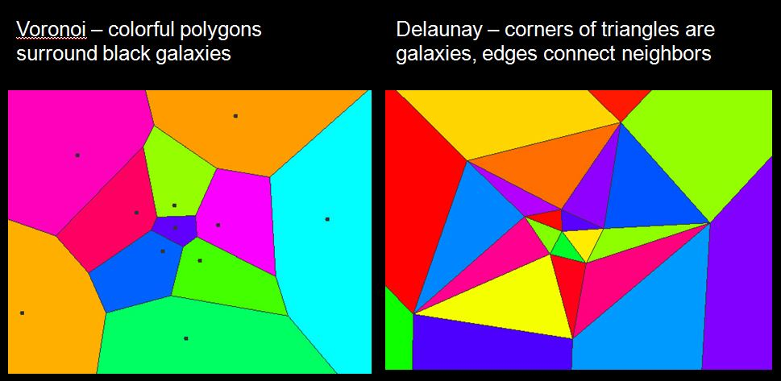
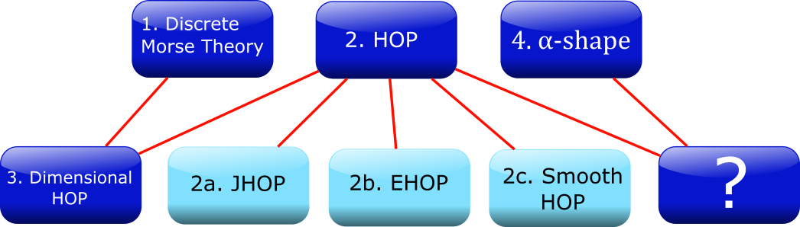
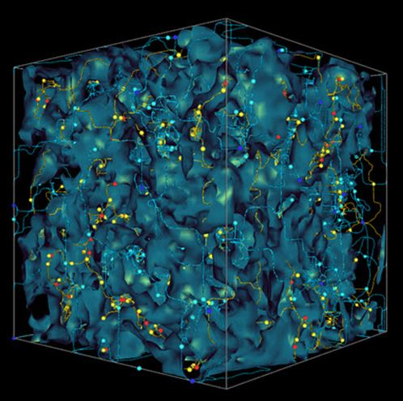
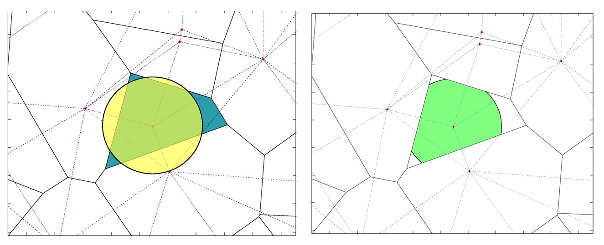
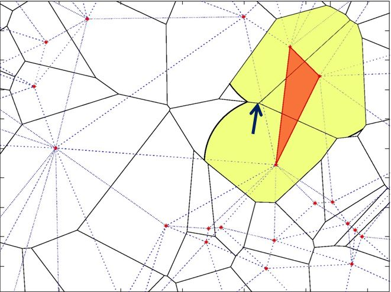

Information
This project was a study at San Jose State University in 2014 for the Center for Applied Mathematics, Computation, and Statistics (CAMCOS). The project was sponsored by NASA Ames Research Center.
Contributors:
- Hai Nguyen Au
- Catherine Boersma
- Joey Fitch
- David Goulette
- Jian-Long Liu
- Matthew Litrus
- Brandon Morrison
- Jeffrey Scargle (Astrophysicist/Supervisor)
- Slobodan Simic (Professor/Supervisor)
Introduction
Given a set of points, how can we determine the geometry and topology of those points? What shapes do you see? What if I told you that these dots actually formed letters (obviously with some dots missing)? With that knowledge, would you be able to identify the letters that these points form? Of course it is almost impossible with so few points. But the more points we have, the easier the task becomes. And at some point, our eyes and brains can link clusters of points to familiar letters that we have seen in our past.
The question is, how do we train the computer to do the same? To do this, We want to be able to say which points should be connected to one another. We want to identify areas of thick point distributions and classify them separately from thin distributions. We want to see how many holes are in the data (the N has no holes and the L has two). In this project, since we only have one universe and only one point distribution, we can only use unsupervised learning to make sense of the our data.
The Data
The data we are working with is a subset of 134,000 galaxies from the Sloan Digital Sky Survey (SDSS DR7), which is data collected from the 2.5 m telescope at the Apache Point Observatory in New Mexico. Each object here is an entire galaxy like the milky way, composed of hundreds of billions of stars like our sun. As we fly through the data, you might get a sense of structure – what some call the “cosmic web”.
Goals
There appear to be over-dense and under-dense regions. Our goal is to characterize the geometry and topology of this data set is to identify structures.
- Partition of the space
- Grouping
- Classification of structures using
- Clusters
- Filaments
- Voids
Partition the Space
In order to group points together, we need to identify neighboring points. Our first task is partitioning the data space. To do so, we surround the points with cells. In order to define the density of a point in a point cloud, we first tessellate our data using a Voronoi tessellation. Notice that in regions of high point density, the Voronoi cells have small area. In the Delaunay triangulation, each vertex is a galaxy. A Delaunay triangulation puts edges connecting the neighboring galaxies. In graph theory, the Voronoi tessellation is the dual graph of the Delaunay tessellation. When two Voronoi cells border each other, there is an edge between them in the Delaunay tessellation. In the Voronoi diagram, every galaxy is surrounded by a polygonal cell. In the Delaunay triangulation, every galaxy is the vertex of a triangle.

In order to identify areas of high and low density in the data set, we need to define a density function. In physics, density is the ratio of mass to volume. Since we assume the galaxy masses are all equal, we assign them a mass of 1 and divide by the volume of the Voronoi cell surrounding the galaxy.
$$\rho = \frac{\text{Mass}}{\text{Volume}}$$
$$\rho = \frac{1}{\text{Voronoi cell volume}}$$
In our efforts to partition the data, group small clusters, and classify structures, we tried many different algorithms. Our goal in each case was the same: to determine a computationally simple algorithm with few parameters to identify structures. Initially, we examined Discrete Morse Theory, and then proceeded with variations of HOP, such as JHOP, EHOP, and smooth HOP. We tried to get the same results from Discrete Morse Theory using a version of HOP called Dimensional HOP and then we looked at alpha shapes and combined them with HOP for a potential new technique to analyze the cosmic web. (For more details about each method, please refer to our full article).

Discrete Morse Theory
In Discrete Morse Theory, we define simplices in different dimensions as follows
- 0-dimensional: a point
- 1-dimensional: a line segment
- 2-dimensional: a triangle
- 3-dimensioanl: a tetrahedron
When we apply Discrete Morse Theory on the Sloan Digital Sky Survey Data, we find the points of maximum density, pictured here as red points. The saddles are yellow and light blue. The minima are dark blue points. The algorithm partitions the data set into ascending and descending manifolds. In the example of the donut, we only had two pairs of critical points to cancel. As you can imagine, the process of cancelling critical points given the complexity of our data in 3D is non-trivial.

HOP
HOP is a simple algorithm for grouping data points and observing potential structure in our galaxy data formulated by Eisenstein and Hut in 1997. In the HOP process, we start from a vertex, consider all neighboring points of the chosen vertex, then find the highest-valued neighbor and HOP to that vertex. Using the HOP algorithm, we can identify:
- HOP Paths: any chain of HOP arrows that indicate a flow from low density to high density
- The maxima: points which are higher-valued than all of their neighbors; i.e. the termination of any HOP path
- Max Classes: a set of vertices who all HOP to the same maximum (including the maximum itself)
- Boundary points: points on the edge of a max class
- Bond Edges: edges between 2 points on different boundaries (i.e. in 2 different max classes)
HOP is a very simple parameter-free algorithm with several other benefits. It is easy to compute, can allow room for pre-/ post-processing. The algorith provides guaranteed and unique convergence. The paths can be reversed and generalized to any dimension.
α-shapes
To create an α-shape, we start with a Voronoi cell (blue area) and the representative data point (red dot). Then we create a disk of radius α, centerd at the data point in the Voronoi cell (yellow disk). The intersection of the Voronoi cell and the disk of radius α is the α-shape.

When the radius α is large enough, neighboring α-shapes have intersecting boundaries. When two neighboring α-shape intersect, we connect the data points with an edge. When three α-shapes share a point on their boundary, we can fill in the triangle as shown below

As α increases, more and more connections over large distances are made. As α approaches infinity, we recover the full Delaunay triangulation.
Future Work
Since each algorithm has its benefits and drawbacks, we can find a framework to comparatively analyze the outputs of these algorithms to see which one performs best. With more data coming in, we can also test our algorithms against simulations of the evolution of the galactic distribution and other sky surveys with more data points.